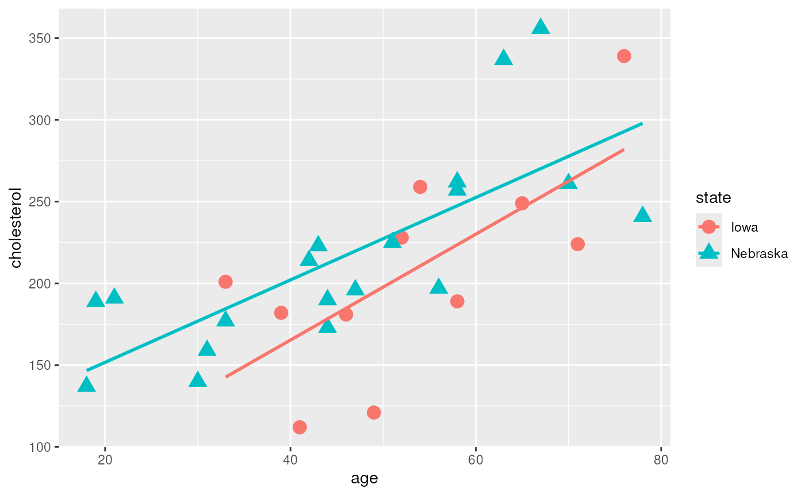

Session 1 lab: Association between cholesterol and age
Levi Waldron
session_lab.RmdLearning objectives
- Load a tab-separated dataset into R
- Create a simple scatterplot using
ggplot2 - Fit and analyze a multiple linear regression model
- Compare two nested models using a nested Analysis of Variance (partial F test)
Exercises
- Load the
cholesterol.tsvdataset into R - Fit linear models with age, state, and interaction terms as predictors
- Compare a simple linear regression to a multiple linear regression using Analysis of Variance partial F-test
- Use backwards selection from a full model with interactions to choose the best prediction model
Load the dataset
Figure out this command using File - Import Dataset
library(readr)
chol <- read_table("cholesterol.tsv",
col_types = cols(age = col_double()))
summary(chol)## cholesterol age state
## Min. :112.0 Min. :18.00 Length :30
## 1st Qu.:181.2 1st Qu.:39.50 N.unique : 2
## Median :199.0 Median :48.00 N.blank : 0
## Mean :213.7 Mean :48.57 Min.nchar: 4
## 3rd Qu.:247.0 3rd Qu.:58.00 Max.nchar: 8
## Max. :356.0 Max. :78.00Create a scatterplot of Cholesterol vs. Age
Take Data Science Module 1 “Data Visualization Basics” first if you
aren’t familiar with ggplot2:
library(ggplot2)
ggplot(chol, aes(x=age, y=cholesterol, shape=state, color=state)) +
geom_point(size=4) +
geom_smooth(method=lm, se = FALSE)
Fit a linear model with age, state, and interaction as predictors
cholesterol as the outcome variable.
##
## Call:
## lm(formula = cholesterol ~ age * state, data = chol)
##
## Residuals:
## Min 1Q Median 3Q Max
## -73.480 -31.907 -4.303 22.829 85.833
##
## Coefficients:
## Estimate Std. Error t value Pr(>|t|)
## (Intercept) 35.8112 55.1166 0.650 0.52156
## age 3.2381 1.0088 3.210 0.00352 **
## stateNebraska 65.4866 61.9834 1.057 0.30045
## age:stateNebraska -0.7177 1.1628 -0.617 0.54247
## ---
## Signif. codes: 0 '***' 0.001 '**' 0.01 '*' 0.05 '.' 0.1 ' ' 1
##
## Residual standard error: 43.14 on 26 degrees of freedom
## Multiple R-squared: 0.5326, Adjusted R-squared: 0.4786
## F-statistic: 9.875 on 3 and 26 DF, p-value: 0.00016Create an ANOVA table for this fit
anova(fit)## Analysis of Variance Table
##
## Response: cholesterol
## Df Sum Sq Mean Sq F value Pr(>F)
## age 1 48976 48976 26.3124 2.388e-05 ***
## state 1 5456 5456 2.9315 0.09877 .
## age:state 1 709 709 0.3809 0.54247
## Residuals 26 48395 1861
## ---
## Signif. codes: 0 '***' 0.001 '**' 0.01 '*' 0.05 '.' 0.1 ' ' 1Partial F-test for two models
fit1 <- lm(cholesterol ~ state, data=chol)
fit2 <- lm(cholesterol ~ state + age, data = chol)
anova(fit1, fit2)## Analysis of Variance Table
##
## Model 1: cholesterol ~ state
## Model 2: cholesterol ~ state + age
## Res.Df RSS Df Sum of Sq F Pr(>F)
## 1 28 102924
## 2 27 49104 1 53820 29.593 9.361e-06 ***
## ---
## Signif. codes: 0 '***' 0.001 '**' 0.01 '*' 0.05 '.' 0.1 ' ' 1Backwards selection to select the best prediction model
library(MASS)
fit <- lm(cholesterol ~ age * state, data=chol)
step <- stepAIC(fit, direction = "backward")## Start: AIC=229.58
## cholesterol ~ age * state
##
## Df Sum of Sq RSS AIC
## - age:state 1 709.05 49104 228.01
## <none> 48395 229.58
##
## Step: AIC=228.01
## cholesterol ~ age + state
##
## Df Sum of Sq RSS AIC
## <none> 49104 228.01
## - state 1 5456 54560 229.18
## - age 1 53820 102924 248.22AIC = Akaike’s Information Criterion